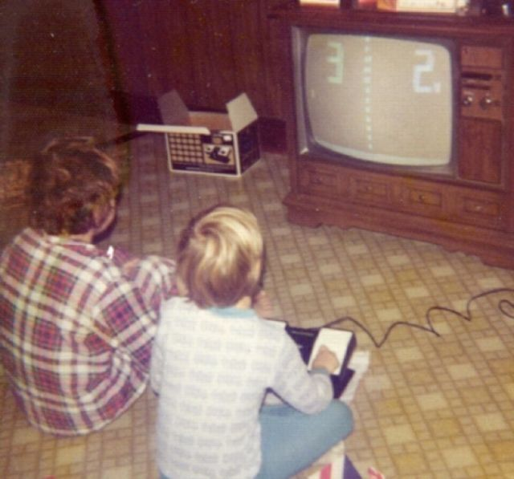
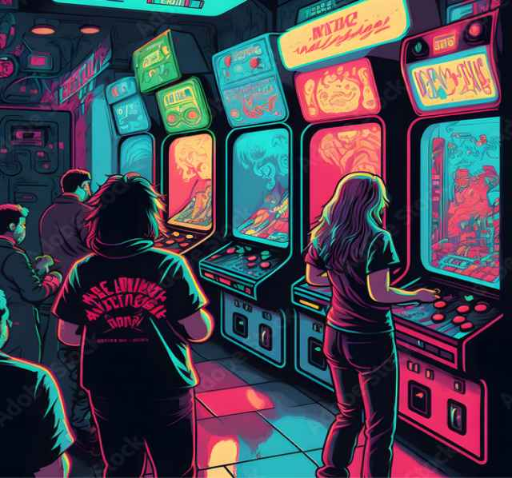
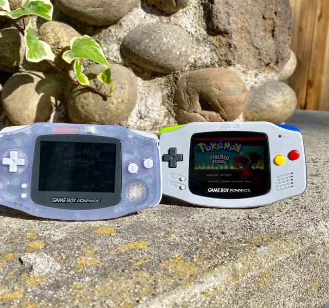
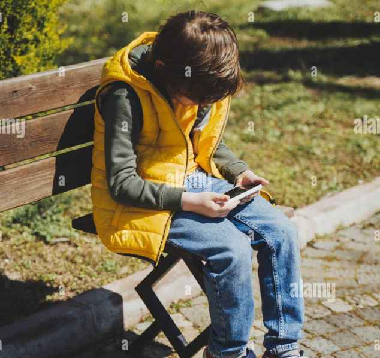
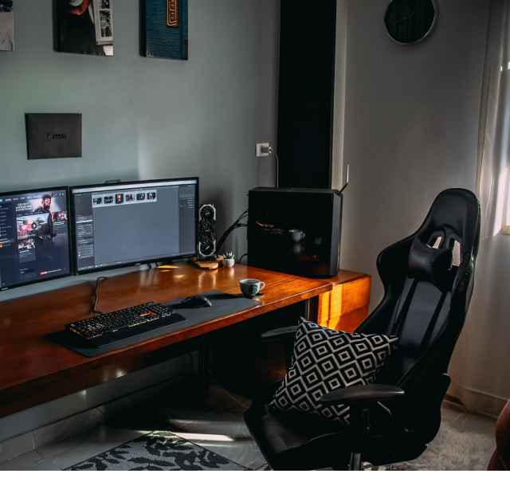

The dimly lit childhood bedroom was the starting point. Within its walls, the classic console introduced the first taste of adventure and fantasy games.

Stepping out from the bedroom and into the local arcade, competitive gaming came into focus. The thrill of high scores and shared experiences deepened the gaming passion.

Taking the love for gaming outside, the handheld console became a frequent companion. Nature's tranquility offered a unique blend of real and virtual exploration.

Mobile games became a brief escape from the urban rush. These quick sessions carved out moments of calm, seamlessly integrating gaming into city life.
At home or the café, the laptop can bridge worlds making gaming seamlessly accessible, blending the comfort of home and the vibrancy of public spaces.
One can't help but marvel at the intricacies of the virtual realm. As it simulates real-world sensory experiences.
At the station, gaming podcasts became a traveler's escape, keeping the essence of gameplay alive amidst the hum of daily life.

Evolution continued into modernity, where sharing gaming experiences became integral. Connecting personal achievements with a broader online community.
As gaming influences art exhibitions and cultural discussions, its impact transcends just play. It has become a medium for expression, critique, and reflection in contemporary society.